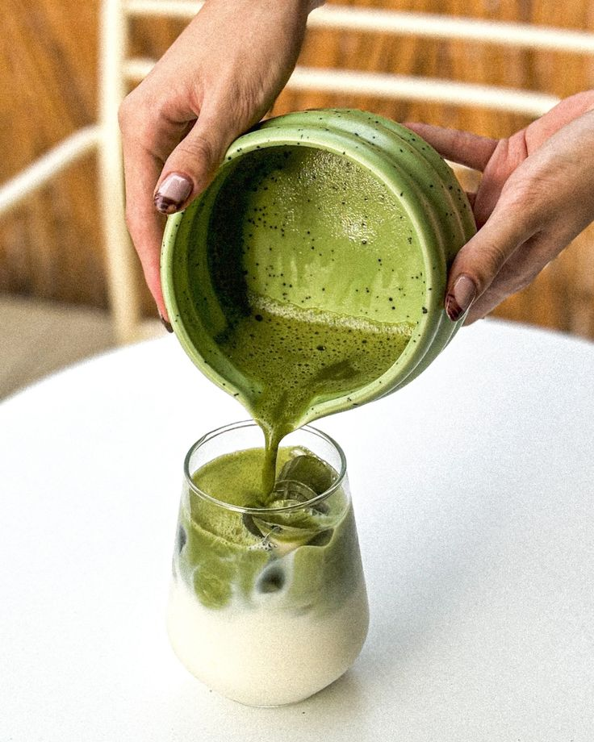

5 Alasan Kesehatan Kenapa Kamu Harus Rutin Minum Matcha

Selain rasanya yang lezat dan efeknya yang menenangkan, matcha dikenal kaya akan nutrisi penting bagi tubuh. Tidak heran jika minuman matcha kini menjadi pilihan populer untuk gaya hidup sehat dan seimbang.
1. Kaya akan Antioksidan Tinggi (EGCG)
Matcha mengandung klorofil dan antioksidan katekin (EGCG) dalam jumlah berlimpah. Antioksidan ini membantu melawan radikal bebas dalam tubuh, menjaga daya tahan tubuh, dan menjaga kesehatan kulit agar tetap segar.
2. Meningkatkan Fokus Tanpa Rasa Gelisah
Kombinasi kafein dan asam amino L-theanine pada matcha memberikan energi yang bertahan lebih lama tanpa memicu efek deg-degan. Kamu bisa tetap fokus bekerja atau belajar dengan perasaan yang lebih rileks.
3. Meningkatkan Mood & Menenangkan Pikiran
Kandungan L-theanine merangsang produksi gelombang alfa di otak yang menciptakan rasa tenang (calming effect). Menikmati segelas kreasi matcha favorit di Mivatcha bisa jadi cara terbaik untuk relaksasi sejenak.